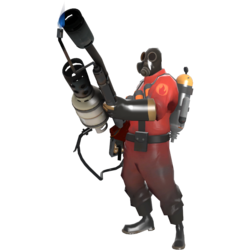
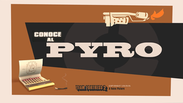

pyro
- icono:
- tipo: ataque
- salud: 175/ 260
- velocidad: 100%
meet the pyro
El Pyro es un ser humano con obsesión por la piromanía, de origen indeterminado que solo murmura a través de una máscara que oculta una ardiente pasión por todas las cosas relacionadas con el fuego. Como se muestra en Conoce al Pyro, el Pyro parece ser la representación de la locura y el delirio, viviendo en un mundo utópico de fantasía conocido como Pyrolandia. El Pyro se especializa en combatir a sus enemigos a corta distancia usando un Lanzallamas casero. Los enemigos incendiados sufren de daño por quemadura y reciben daño adicional durante un tiempo, dando ventaja al Pyro en tácticas de atacar y huir. Debido al corto alcance del Lanzallamas, el Pyro es débil a largas distancias y debe recurrir a emboscadas y tomar rutas alternativas para atrapar a enemigos indefensos. Aunque está categorizada como una clase de ataque, el Pyro también lleva utilidad al campo de batalla. La explosión de aire comprimido, por ejemplo, puede devolver proyectiles enemigos, apagar a compañeros en llamas y reposicionar a la fuerza a cualquier enemigo, incluyendo a los que están bajo efecto de una Supercarga que otorga invulnerabilidad. Una de las características del fuego es que envuelve a los enemigos en llamas, por lo que el Pyro es la mejor clase para buscar Spies, ya que incluso un pequeño soplo de llamas puede anular la efectividad de la invisibilidad del Spy y sus disfraces. Además, el Pyro puede usar el Demoledor y el Aniquilador de Neón para proteger las construcciones de un Engineer del Zapador de un Spy enemigo. El Pyro también puede usar el Detonador o el Chamuscador para hacer un salto con bengala y el Propulsor Térmico para volar a lugares que normalmente no alcanzaría. El Pyro viste un traje de amianto que le provee protección contra el daño por quemadura de otros Pyros y todo el armamento relacionado con el fuego (excepto la Furia del Dragón y el Lanzacombustible, los cuales pueden prender fuego a los Pyros), aunque no provee resistencia contra el daño directo de los lanzallamas, pistolas de bengalas ni explosiones. Las tres granadas incendiarias en el pecho del Pyro son puramente cosméticos y no se puede usar. El Scout está doblado por Dennis Bateman en todas las versiones, ya que carece de vocalización y solo emite sonidos.